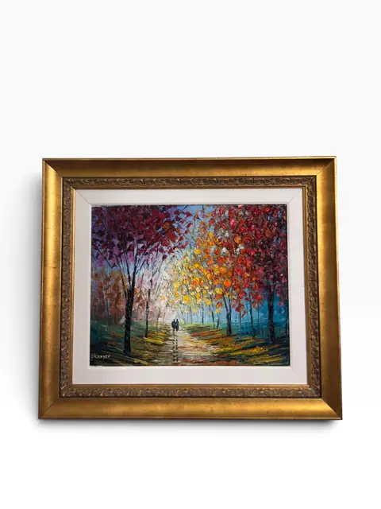
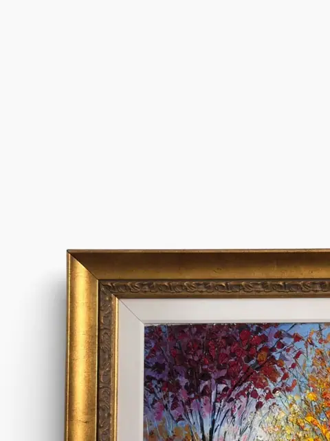
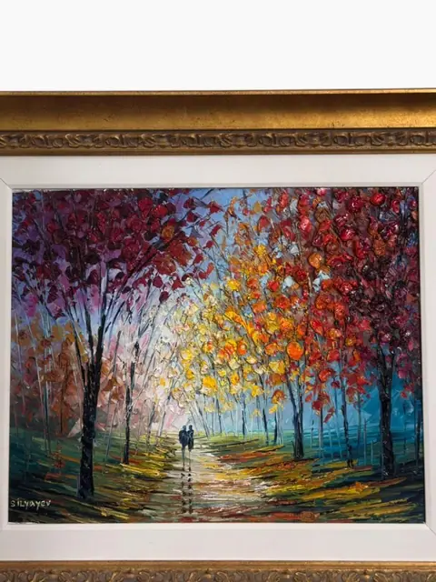
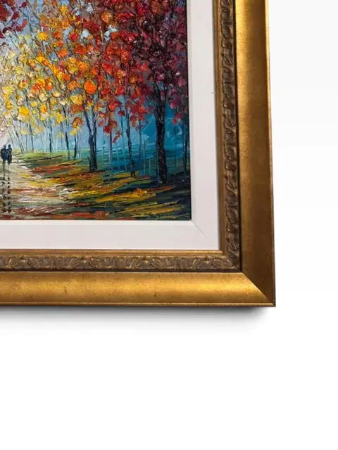
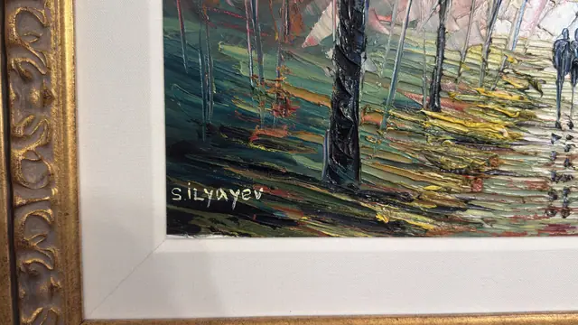
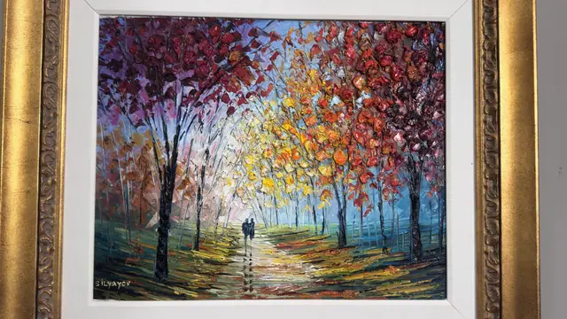
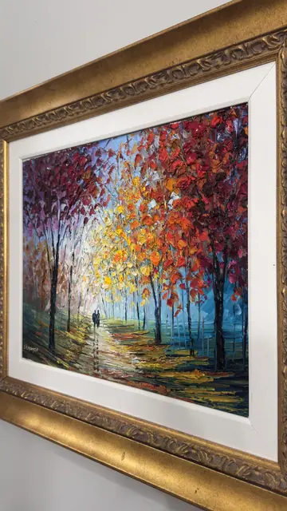
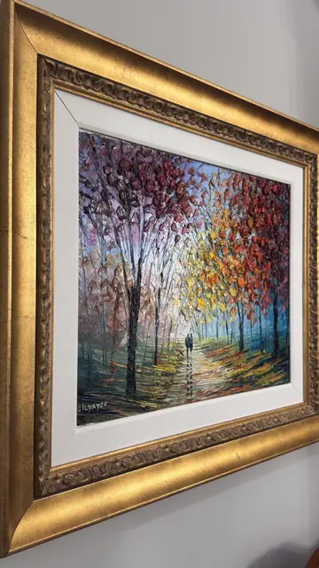
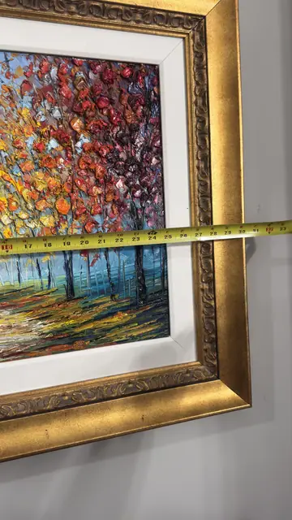
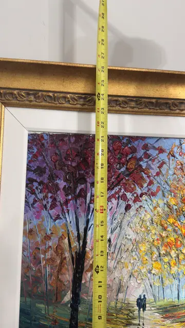

Paintings & Prints
Autumn Park Alley — Slava Ilyayev, Signed Oil, Framed
Slava Ilyayev · 21st century
Price Upon Request











About the Item
Signed 'Silyayev' lower left, this luminous autumn park scene is a classic Slava Ilyayev composition: palette-knife impasto in crimson, gold and amber, with two small figures strolling down a sunlit alley. Presented in an ornate gilt frame with white liner, it is a warm, collectible statement piece. Signature 'Silyayev' (S. Ilyayev) lower left; subject, impasto technique and signature match the documented work of Slava Ilyayev (b. 1970, Baku; active in Israel), whose original oils are widely sold at auction. Style: contemporary impressionist/impasto.
Details
- Creator:
- Slava Ilyayev
- Creation Year:
- 21st century
- Medium:
- Oil on canvas
- Period:
- 21St
- Condition:
- Offered in the condition shown in the photographs.
- Reference Number:
- VO-295